Candidate List 20260609 Previous Day Next Day Section 1: New Sources (age<1d) Cosmological Afterglow
Section 2: Old (1-5d) sources observed last night placeholder
Section 1: New Afterglow/FBOT Cands Last Night (2)
1. ZTF26abapyhw (FBOT?) [Back to Top] [Share] [Trigger Swift] [Fritz ] [Lasair ]RA, Dec: 181.74845, 7.63955 12h 6m59.63s, 7d38m22.39sGalactic (l, b): 272.50098, 67.84592 ext(g-r) = 0.02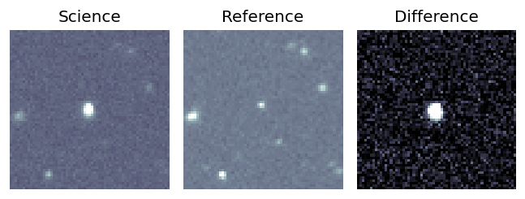
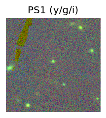
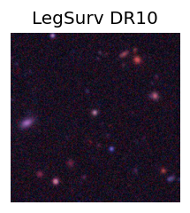
peak abs mag = -23.50 LegacySurvey: 1 sources in 3 arcsec Closest: d = 1.87 arcsec, 8.3 deg (east of north) photoz=0.41 (68% bounds 0.27, 1.95), type=REX peak abs mag = -23.62 (68% bounds -22.55, -27.72) 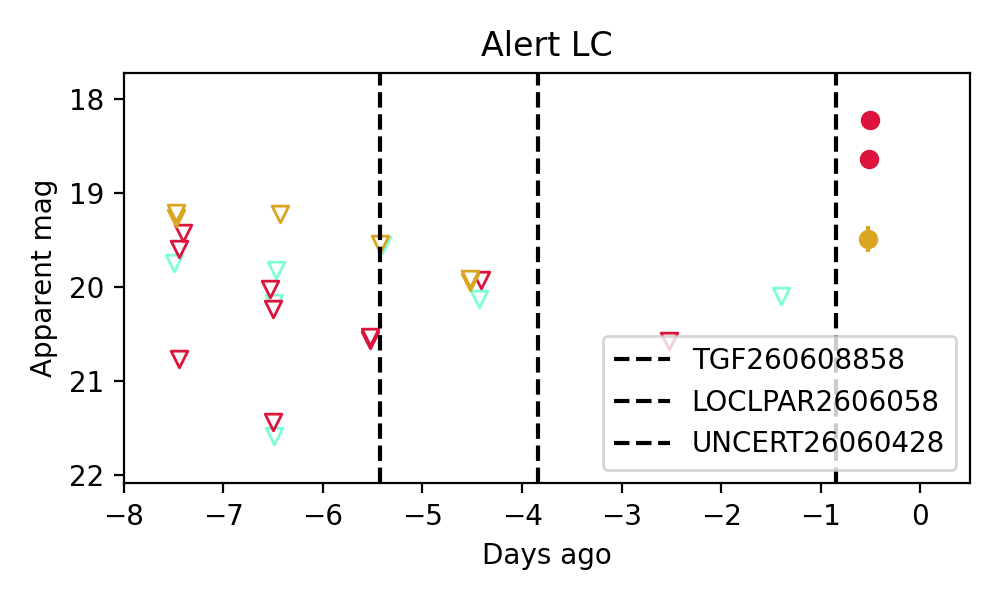
2. ZTF26abaqiwc (Afterglow?) [Back to Top] [Share] [Trigger Swift] [Fritz ] [Lasair ]RA, Dec: 185.24398, 11.32229 12h20m58.55s, 11d19m20.23sGalactic (l, b): 277.10114, 72.64838 ext(g-r) = 0.039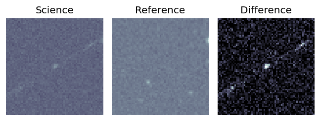
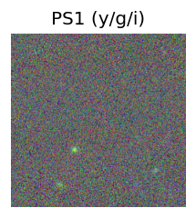
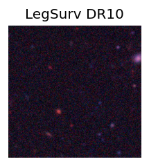
LegacySurvey: 1 sources in 3 arcsec Closest: d = 3.18 arcsec, 262.4 deg (east of north) photoz=1.01 (68% bounds 0.73, 1.28), type=PSF peak abs mag = -23.63 (68% bounds -22.77, -24.26) 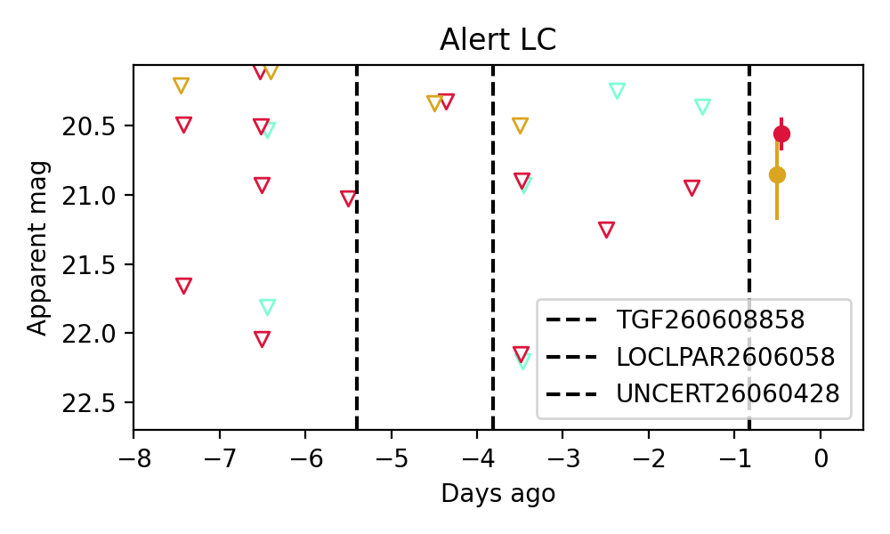
Consistent with synchrotron, g-r>0!
Section 2: Older Sources Observed Last Night (36)
0. ZTF26aazjnrk (FBOT?) [Back to Top] [Share] [Trigger Swift] [Fritz ] [Lasair ]RA, Dec: 209.38824, 23.46099 13h57m33.18s, 23d27m39.55sGalactic (l, b): 22.79149, 74.62597 ext(g-r) = 0.021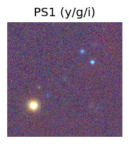
peak abs mag = -22.23 LegacySurvey: 1 sources in 3 arcsec Closest: d = 0.40 arcsec, 204.7 deg (east of north) photoz=0.1 (68% bounds 0.05, 0.73), type=EXP peak abs mag = -18.86 (68% bounds -17.46, -23.8) 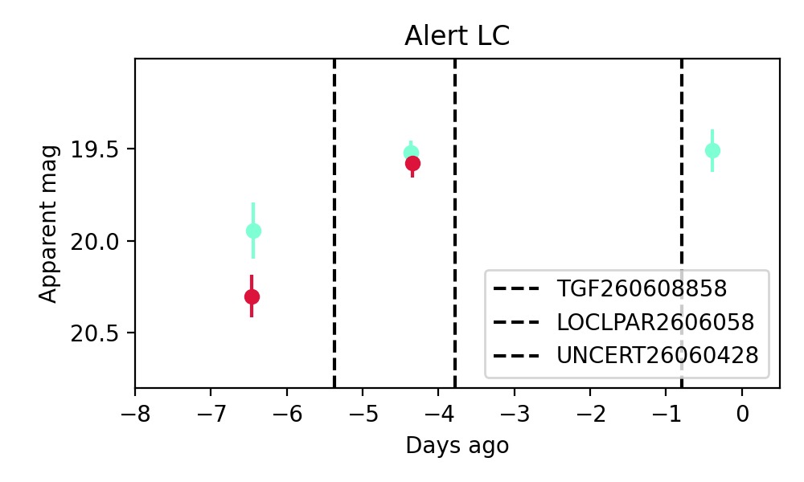
Consistent with synchrotron, g-r>0!
1. ZTF26aazpkda (Afterglow?) [Back to Top] [Share] [Trigger Swift] [Fritz ] [Lasair ]RA, Dec: 235.51013, 8.30986 15h42m2.43s, 8d18m35.50sGalactic (l, b): 16.0679, 45.52973 ext(g-r) = 0.047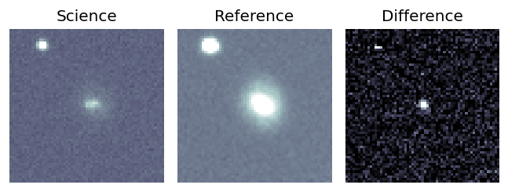
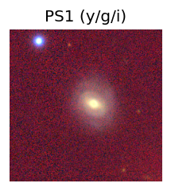
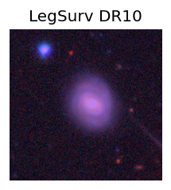
peak abs mag = -17.96 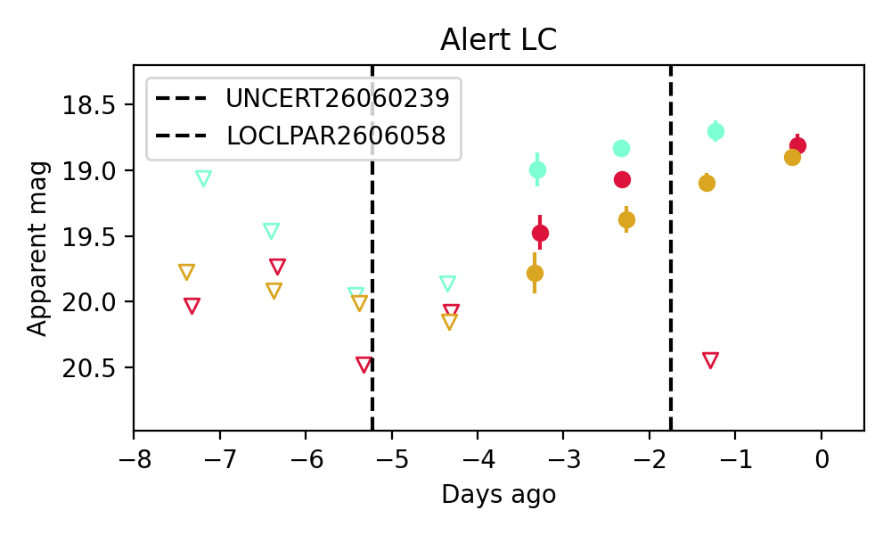
2. ZTF26aaztkuj (FBOT?) [Back to Top] [Share] [Trigger Swift] [Fritz ] [Lasair ]RA, Dec: 220.52591, -19.93454 14h42m6.22s, -19d-56m-4.34sGalactic (l, b): 335.51097, 35.84096 WARNING: -4.0 deg from ecliptic plane ext(g-r) = 0.113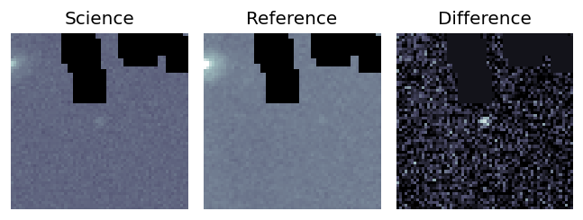
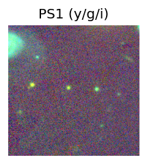
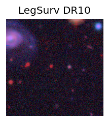
LegacySurvey: 1 sources in 3 arcsec Closest: d = 2.59 arcsec, 75.2 deg (east of north) photoz=0.15 (68% bounds 0.03, 0.27), type=PSF peak abs mag = -20.51 (68% bounds -16.76, -21.93) 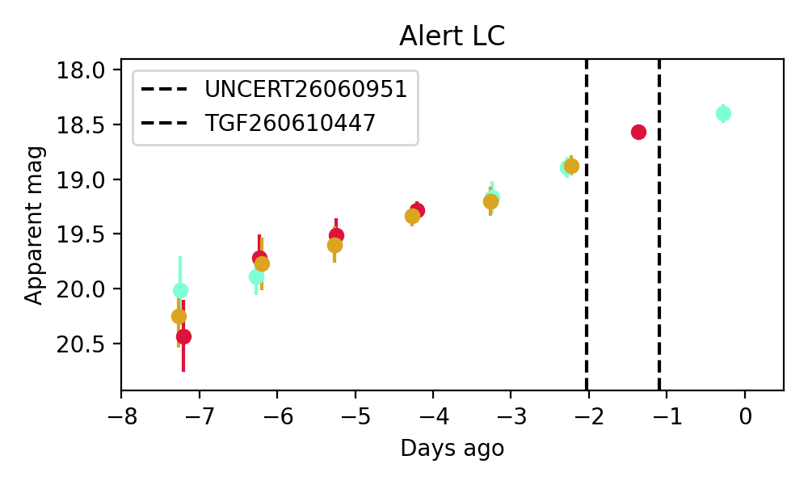
Consistent with synchrotron, g-r>0!
3. ZTF26aaztwcq (Afterglow?) [Back to Top] [Share] [Trigger Swift] [Fritz ] [Lasair ]RA, Dec: 239.32552, 11.28156 15h57m18.13s, 11d16m53.63sGalactic (l, b): 22.26617, 43.65936 ext(g-r) = 0.057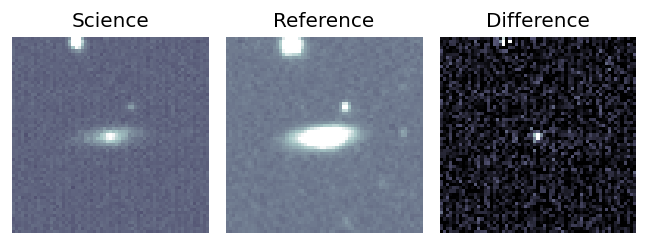
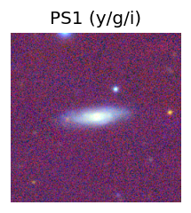
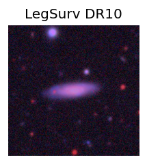
peak abs mag = -17.81 peak abs mag = -18.19 LegacySurvey: 1 sources in 3 arcsec Closest: d = 0.19 arcsec, 265.8 deg (east of north) photoz=0.06 (68% bounds 0.04, 0.07), type=EXP peak abs mag = -17.71 (68% bounds -16.94, -18.23) 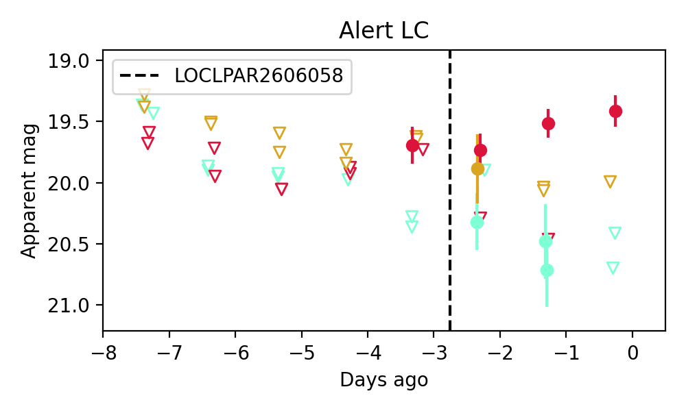
4. ZTF26aazuwhc (FBOT?) [Back to Top] [Share] [Trigger Swift] [Fritz ] [Lasair ]RA, Dec: 251.98677, -25.02912 16h47m56.83s, -25d-1m-44.85sGalactic (l, b): 355.81474, 12.76066 WARNING: -2.6 deg from ecliptic plane ext(g-r) = 0.397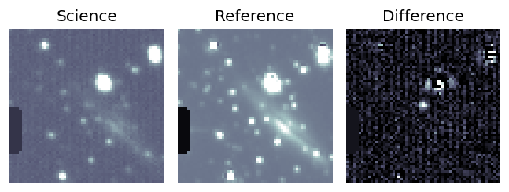
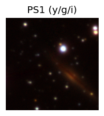
PS1: 1 source in 3 arcsec Closest: d = 2.91 arcsec photoz=0.07+/-0.01 peak abs mag = -20.30 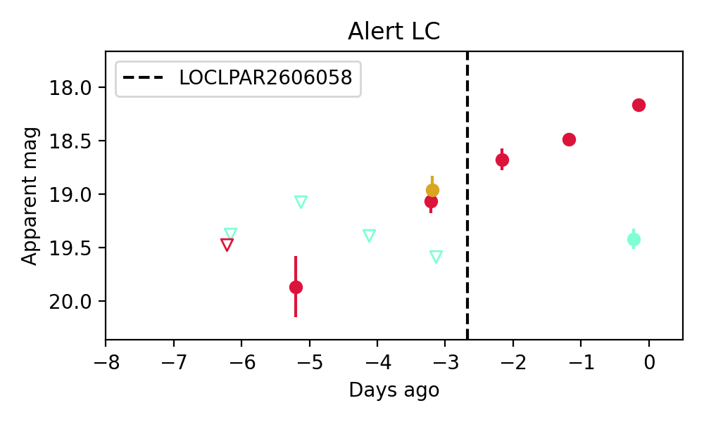
Consistent with synchrotron, g-r>0!
5. ZTF26aazxowv (FBOT?) [Back to Top] [Share] [Trigger Swift] [Fritz ] [Lasair ]RA, Dec: 250.97368, 67.79103 16h43m53.68s, 67d47m27.72sGalactic (l, b): 99.28307, 36.85932 ext(g-r) = 0.035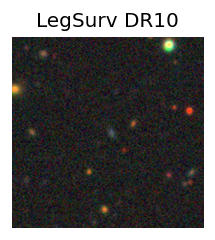
LegacySurvey: 1 sources in 3 arcsec Closest: d = 1.37 arcsec, 256.4 deg (east of north) photoz=0.2 (68% bounds 0.15, 0.27), type=EXP peak abs mag = -20.1 (68% bounds -19.48, -20.83) 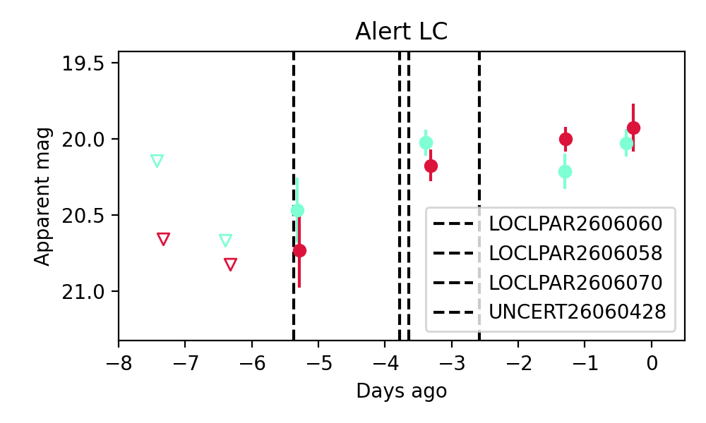
Consistent with synchrotron, g-r>0!
6. ZTF26ababons (Afterglow?) [Back to Top] [Share] [Trigger Swift] [Fritz ] [Lasair ]RA, Dec: 268.8878, 6.194 17h55m33.07s, 6d11m38.39sGalactic (l, b): 32.13464, 15.23774 ext(g-r) = 0.232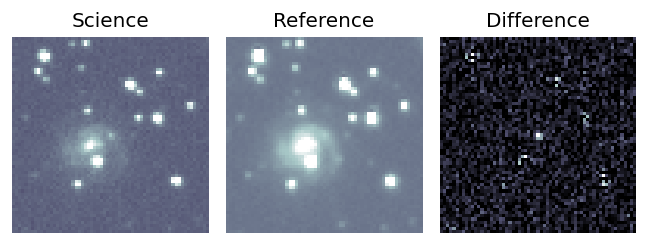
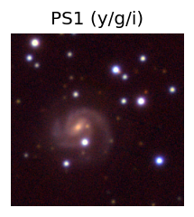
peak abs mag = -16.44 PS1: 1 source in 3 arcsec Closest: d = 0.07 arcsec photoz=0.04+/-0.01 peak abs mag = -17.48 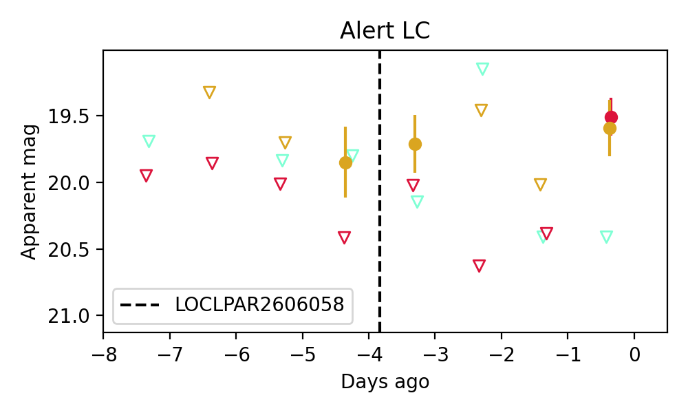
Consistent with synchrotron, g-r>0!
7. ZTF26abaceqi (Afterglow?) [Back to Top] [Share] [Trigger Swift] [Fritz ] [Lasair ]RA, Dec: 282.00774, 29.81171 18h48m1.86s, 29d48m42.15sGalactic (l, b): 59.64438, 13.77867 ext(g-r) = 0.162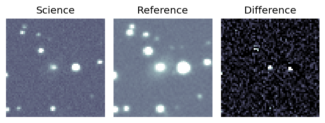
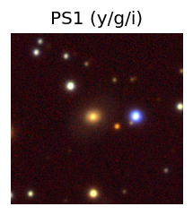
peak abs mag = -18.94 PS1: 1 source in 3 arcsec Closest: d = 1.63 arcsec photoz=0.06+/-0.00 peak abs mag = -18.35 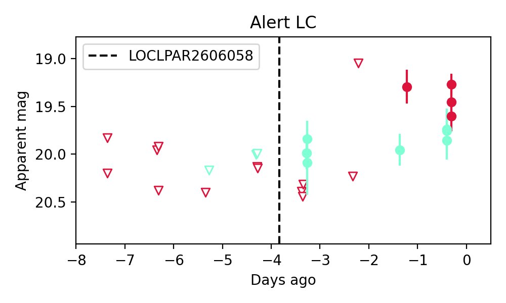
Consistent with synchrotron, g-r>0!
8. ZTF26abaceta (Afterglow?) [Back to Top] [Share] [Trigger Swift] [Fritz ] [Lasair ]RA, Dec: 285.81478, 8.63593 19h 3m15.55s, 8d38m9.36sGalactic (l, b): 41.96015, 1.32385 ext(g-r) = 3.628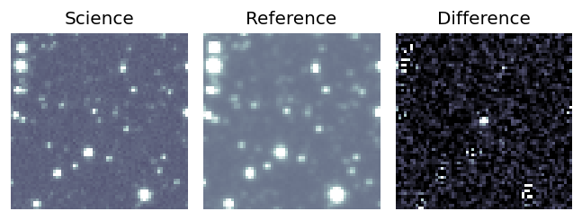
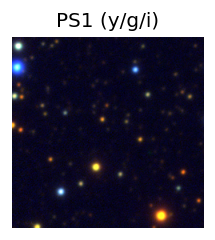
PS1: 1 source in 3 arcsec Closest: d = 0.58 arcsec photoz=0.43+/-0.09 peak abs mag = -28.42 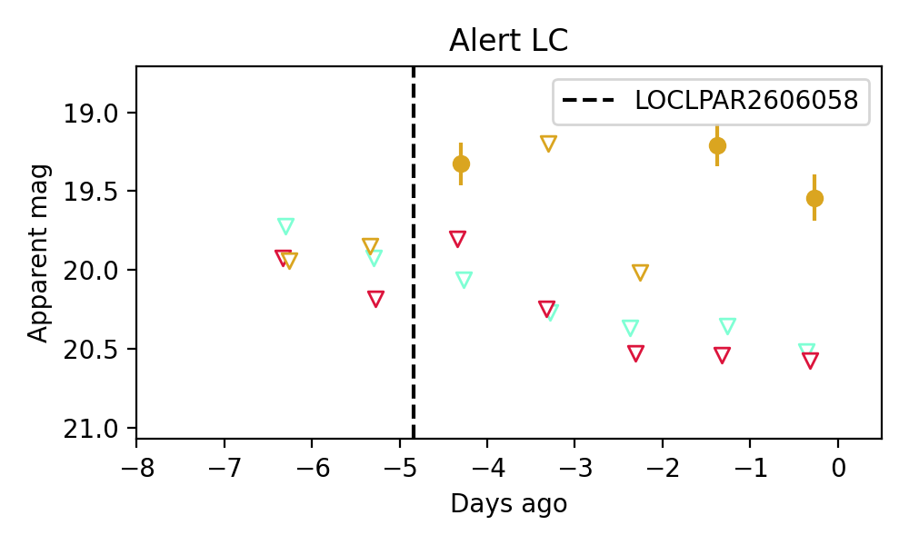
9. ZTF26abafuvi (FBOT?) [Back to Top] [Share] [Trigger Swift] [Fritz ] [Lasair ]RA, Dec: 223.39722, -15.40669 14h53m35.33s, -15d-24m-24.07sGalactic (l, b): 341.46625, 38.15968 WARNING: 1.13 deg from ecliptic plane ext(g-r) = 0.097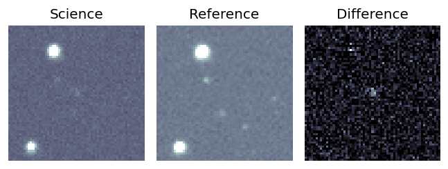
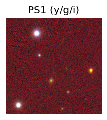
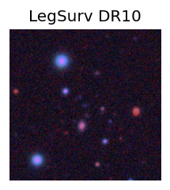
LegacySurvey: 1 sources in 3 arcsec Closest: d = 0.56 arcsec, 178.5 deg (east of north) photoz=0.45 (68% bounds 0.14, 1.08), type=REX peak abs mag = -22.28 (68% bounds -19.47, -24.6) 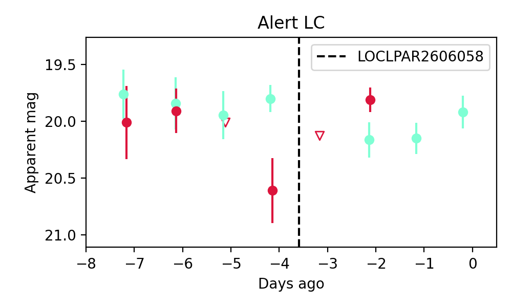
Consistent with synchrotron, g-r>0!
10. ZTF26abafxlk (FBOT?) [Back to Top] [Share] [Trigger Swift] [Fritz ] [Lasair ]RA, Dec: 244.48424, 14.40345 16h17m56.22s, 14d24m12.41sGalactic (l, b): 28.95435, 40.43397 ext(g-r) = 0.06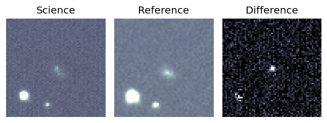
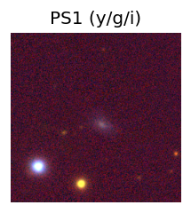
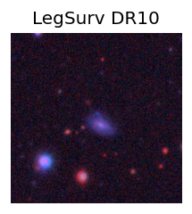
peak abs mag = -18.53 LegacySurvey: 1 sources in 3 arcsec Closest: d = 1.62 arcsec, 334.5 deg (east of north) photoz=0.15 (68% bounds 0.06, 0.74), type=EXP peak abs mag = -19.81 (68% bounds -17.67, -23.79) 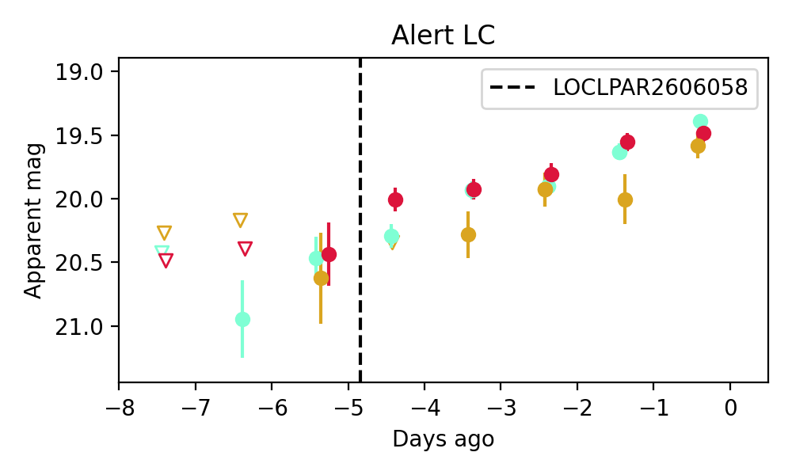
Consistent with synchrotron, g-r>0!
11. ZTF26abagkaa (FBOT?) [Back to Top] [Share] [Trigger Swift] [Fritz ] [Lasair ]RA, Dec: 259.76876, 56.36176 17h19m4.50s, 56d21m42.34sGalactic (l, b): 84.48777, 34.95839 ext(g-r) = 0.022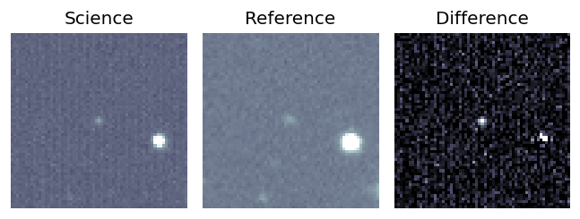
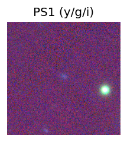
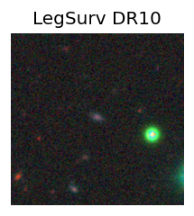
peak abs mag = -21.09 LegacySurvey: 1 sources in 3 arcsec Closest: d = 0.68 arcsec, 9.9 deg (east of north) photoz=0.12 (68% bounds 0.09, 0.16), type=EXP peak abs mag = -18.95 (68% bounds -18.26, -19.59) 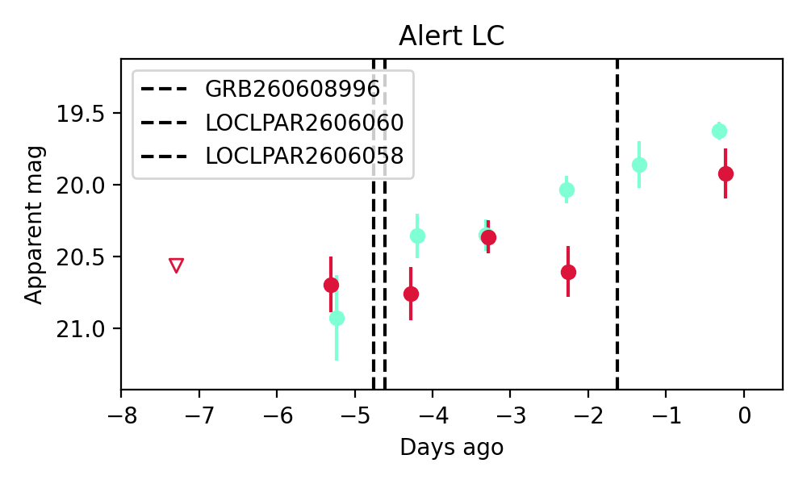
12. ZTF26abamfqk (FBOT?) [Back to Top] [Share] [Trigger Swift] [Fritz ] [Lasair ]RA, Dec: 215.16164, 42.83089 14h20m38.79s, 42d49m51.21sGalactic (l, b): 79.66383, 66.04371 ext(g-r) = 0.011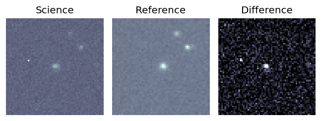
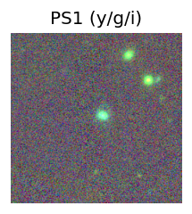
peak abs mag = -19.22 peak abs mag = -19.26 LegacySurvey: 1 sources in 3 arcsec Closest: d = 1.76 arcsec, 173.6 deg (east of north) photoz=0.36 (68% bounds 0.25, 0.59), type=REX peak abs mag = -21.58 (68% bounds -20.65, -22.9) Consistent with synchrotron, g-r>0!
13. ZTF26abamnrt (Afterglow?) [Back to Top] [Share] [Trigger Swift] [Fritz ] [Lasair ]RA, Dec: 247.04328, 35.70161 16h28m10.39s, 35d42m5.79sGalactic (l, b): 57.61745, 43.55321 ext(g-r) = 0.017peak abs mag = -19.50 peak abs mag = -18.88 LegacySurvey: 1 sources in 3 arcsec Closest: d = 1.78 arcsec, 47.7 deg (east of north) photoz=0.13 (68% bounds 0.11, 0.15), type=SER peak abs mag = -19.07 (68% bounds -18.6, -19.47)
14. ZTF26abamtdw (FBOT?) [Back to Top] [Share] [Trigger Swift] [Fritz ] [Lasair ]RA, Dec: 271.20629, 50.23451 18h 4m49.51s, 50d14m4.25sGalactic (l, b): 77.87381, 27.74177 ext(g-r) = 0.049LegacySurvey: 1 sources in 3 arcsec Closest: d = 1.71 arcsec, 1.0 deg (east of north) photoz=0.32 (68% bounds 0.25, 0.47), type=EXP peak abs mag = -21.3 (68% bounds -20.62, -22.27)
15. ZTF26abamtnh (Afterglow?FBOT?) [Back to Top] [Share] [Trigger Swift] [Fritz ] [Lasair ]RA, Dec: 277.98787, -17.38276 18h31m57.09s, -17d-22m-57.94sGalactic (l, b): 15.26601, -3.67506 ext(g-r) = 0.824PS1: 1 source in 3 arcsec Closest: d = 1.28 arcsec photoz=0.09+/-0.04 peak abs mag = -21.57
16. ZTF26abamuti (Afterglow?) [Back to Top] [Share] [Trigger Swift] [Fritz ] [Lasair ]RA, Dec: 300.21353, 40.72116 20h 0m51.25s, 40d43m16.19sGalactic (l, b): 76.31559, 5.52513 ext(g-r) = 0.459
17. ZTF26abantqh (Afterglow?) [Back to Top] [Share] [Trigger Swift] [Fritz ] [Lasair ]RA, Dec: 269.3107, -19.85661 17h57m14.57s, -19d-51m-23.80sGalactic (l, b): 9.1588, 2.36247 WARNING: 3.58 deg from ecliptic plane ext(g-r) = 2.173PS1: 1 source in 3 arcsec Closest: d = 2.77 arcsec photoz=0.98+/-0.21 peak abs mag = -29.10
18. ZTF26abapfxv (Afterglow?) [Back to Top] [Share] [Trigger Swift] [Fritz ] [Lasair ]RA, Dec: 27.04767, 18.5819 1h48m11.44s, 18d34m54.84sGalactic (l, b): 141.22873, -42.2646 ext(g-r) = 0.048peak abs mag = -18.34 peak abs mag = -18.83 LegacySurvey: 1 sources in 3 arcsec Closest: d = 0.36 arcsec, 130.3 deg (east of north) photoz=0.08 (68% bounds 0.07, 0.09), type=DEV peak abs mag = -19.2 (68% bounds -18.8, -19.52)
19. ZTF26abapjds (FBOT?) [Back to Top] [Share] [Trigger Swift] [Fritz ] [Lasair ]RA, Dec: 136.9235, 14.14944 9h 7m41.64s, 14d 8m57.98sGalactic (l, b): 215.07768, 36.50133 WARNING: -2.24 deg from ecliptic plane ext(g-r) = 0.038LegacySurvey: 1 sources in 3 arcsec Closest: d = 0.69 arcsec, 49.8 deg (east of north) photoz=0.58 (68% bounds 0.41, 0.69), type=REX peak abs mag = -25.0 (68% bounds -24.09, -25.47)
20. ZTF26abapxjx (Afterglow?) [Back to Top] [Share] [Trigger Swift] [Fritz ] [Lasair ]RA, Dec: 182.60046, 5.48806 12h10m24.11s, 5d29m17.00sGalactic (l, b): 276.80954, 66.25615 ext(g-r) = 0.017LegacySurvey: 1 sources in 3 arcsec Closest: d = 0.86 arcsec, 122.1 deg (east of north) photoz=0.18 (68% bounds 0.09, 0.25), type=EXP peak abs mag = -18.82 (68% bounds -17.24, -19.64) Consistent with synchrotron, g-r>0!
21. ZTF26abaqdiq (Afterglow?) [Back to Top] [Share] [Trigger Swift] [Fritz ] [Lasair ]RA, Dec: 234.56891, -5.78076 15h38m16.54s, -5d-46m-50.72sGalactic (l, b): 0.02778, 37.95884 ext(g-r) = 0.151LegacySurvey: 1 sources in 3 arcsec Closest: d = 3.55 arcsec, 266.3 deg (east of north) photoz=0.07 (68% bounds 0.02, 0.41), type=PSF peak abs mag = -17.79 (68% bounds -14.74, -22.14) Consistent with synchrotron, g-r>0!
22. ZTF26abaqfsh (Afterglow?) [Back to Top] [Share] [Trigger Swift] [Fritz ] [Lasair ]RA, Dec: 175.01771, 61.42938 11h40m4.25s, 61d25m45.77sGalactic (l, b): 137.25158, 53.66989 ext(g-r) = 0.037peak abs mag = -17.10 LegacySurvey: 1 sources in 3 arcsec Closest: d = 6.19 arcsec, 301.5 deg (east of north) photoz=0.04 (68% bounds 0.03, 0.04), type=SER peak abs mag = -16.82 (68% bounds -16.56, -17.08) Consistent with synchrotron, g-r>0!
23. ZTF26abaqgfv (FBOT?) [Back to Top] [Share] [Trigger Swift] [Fritz ] [Lasair ]RA, Dec: 187.84056, 12.20164 12h31m21.73s, 12d12m5.90sGalactic (l, b): 284.45317, 74.34868 ext(g-r) = 0.025peak abs mag = -18.54 LegacySurvey: 1 sources in 3 arcsec Closest: d = 1.97 arcsec, 215.4 deg (east of north) photoz=0.28 (68% bounds 0.19, 0.45), type=SER peak abs mag = -20.18 (68% bounds -19.26, -21.38)
24. ZTF26abaqglv (Afterglow?) [Back to Top] [Share] [Trigger Swift] [Fritz ] [Lasair ]RA, Dec: 184.47085, 9.86592 12h17m53.00s, 9d51m57.31sGalactic (l, b): 276.71984, 71.00997 ext(g-r) = 0.019LegacySurvey: 1 sources in 3 arcsec Closest: d = 7.10 arcsec, 136.0 deg (east of north) photoz=0.94 (68% bounds 0.5, 1.79), type=PSF peak abs mag = -23.35 (68% bounds -21.69, -25.06)
25. ZTF26abaqlui (Afterglow?) [Back to Top] [Share] [Trigger Swift] [Fritz ] [Lasair ]RA, Dec: 183.71572, 9.8137 12h14m51.77s, 9d48m49.33sGalactic (l, b): 274.72168, 70.65506 ext(g-r) = 0.018LegacySurvey: 1 sources in 3 arcsec Closest: d = 3.19 arcsec, 97.3 deg (east of north) photoz=0.96 (68% bounds 0.87, 1.05), type=EXP peak abs mag = -23.81 (68% bounds -23.55, -24.07)
26. ZTF26abaqlxc (Afterglow?) [Back to Top] [Share] [Trigger Swift] [Fritz ] [Lasair ]RA, Dec: 188.85233, 9.11539 12h35m24.56s, 9d 6m55.41sGalactic (l, b): 290.31011, 71.59326 ext(g-r) = 0.022LegacySurvey: 1 sources in 3 arcsec Closest: d = 4.79 arcsec, 55.9 deg (east of north) photoz=0.51 (68% bounds 0.43, 0.57), type=EXP peak abs mag = -21.57 (68% bounds -21.1, -21.88)
27. ZTF26abaqpxd (Afterglow?) [Back to Top] [Share] [Trigger Swift] [Fritz ] [Lasair ]RA, Dec: 227.76428, -15.87047 15h11m3.43s, -15d-52m-13.69sGalactic (l, b): 345.31722, 35.26552 WARNING: 1.86 deg from ecliptic plane ext(g-r) = 0.1LegacySurvey: 1 sources in 3 arcsec Closest: d = 4.30 arcsec, 197.9 deg (east of north) photoz=0.26 (68% bounds 0.24, 0.28), type=REX peak abs mag = -21.21 (68% bounds -20.99, -21.42)
28. ZTF26abaqpym (FBOT?) [Back to Top] [Share] [Trigger Swift] [Fritz ] [Lasair ]RA, Dec: 231.30083, -6.08795 15h25m12.20s, -6d-5m-16.61sGalactic (l, b): 356.90969, 40.14978 ext(g-r) = 0.097LegacySurvey: 1 sources in 3 arcsec Closest: d = 3.24 arcsec, 3.2 deg (east of north) photoz=0.2 (68% bounds 0.17, 0.25), type=SER peak abs mag = -21.94 (68% bounds -21.5, -22.47)
29. ZTF26abardjo (FBOT?) [Back to Top] [Share] [Trigger Swift] [Fritz ] [Lasair ]RA, Dec: 238.76007, -15.30693 15h55m2.42s, -15d-18m-24.94sGalactic (l, b): 354.9397, 28.48975 WARNING: 4.92 deg from ecliptic plane ext(g-r) = 0.201LegacySurvey: 1 sources in 3 arcsec Closest: d = 1.97 arcsec, 142.7 deg (east of north) photoz=0.63 (68% bounds 0.48, 0.94), type=PSF peak abs mag = -25.08 (68% bounds -24.4, -26.15)
30. ZTF26abarrek (FBOT?) [Back to Top] [Share] [Trigger Swift] [Fritz ] [Lasair ]RA, Dec: 259.86739, -1.811 17h19m28.17s, -1d-48m-39.59sGalactic (l, b): 20.30349, 19.45394 ext(g-r) = 0.485PS1: 1 source in 3 arcsec Closest: d = 0.62 arcsec photoz=0.09+/-0.01 peak abs mag = -19.72 Consistent with synchrotron, g-r>0!
31. ZTF26abasbby (Afterglow?FBOT?) [Back to Top] [Share] [Trigger Swift] [Fritz ] [Lasair ]RA, Dec: 293.18048, 6.37494 19h32m43.31s, 6d22m29.80sGalactic (l, b): 43.36374, -6.19064 ext(g-r) = 0.388PS1: 1 source in 3 arcsec Closest: d = 0.91 arcsec photoz=0.19+/-0.01 peak abs mag = -21.75 Consistent with synchrotron, g-r>0!
32. ZTF26abasceh (Afterglow?) [Back to Top] [Share] [Trigger Swift] [Fritz ] [Lasair ]RA, Dec: 252.72973, -20.53427 16h50m55.13s, -20d-32m-3.36sGalactic (l, b): 359.90497, 14.9757 WARNING: 1.94 deg from ecliptic plane ext(g-r) = 0.61
33. ZTF26abaseuu (Afterglow?) [Back to Top] [Share] [Trigger Swift] [Fritz ] [Lasair ]RA, Dec: 246.64761, -10.39479 16h26m35.43s, -10d-23m-41.24sGalactic (l, b): 4.73083, 25.77756 ext(g-r) = 0.374
34. ZTF26abasisf (FBOT?) [Back to Top] [Share] [Trigger Swift] [Fritz ] [Lasair ]RA, Dec: 259.17072, 12.24327 17h16m40.97s, 12d14m35.77sGalactic (l, b): 33.55296, 26.49588 ext(g-r) = 0.175LegacySurvey: 1 sources in 3 arcsec Closest: d = 1.70 arcsec, 22.0 deg (east of north) photoz=1.03 (68% bounds 0.84, 1.18), type=PSF peak abs mag = -25.01 (68% bounds -24.46, -25.37)
35. ZTF26abatmaz (Afterglow?) [Back to Top] [Share] [Trigger Swift] [Fritz ] [Lasair ]RA, Dec: 250.03724, -11.4138 16h40m8.94s, -11d-24m-49.69sGalactic (l, b): 6.00492, 22.49655 ext(g-r) = 0.369